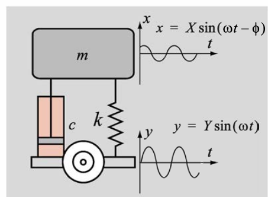
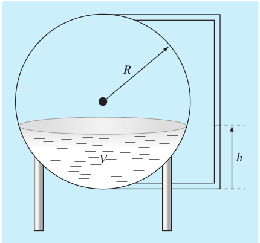

Debe hacer los primeros ejercicios de la guía de calculo numérico para entregar a las 1:00 pm del 15 de agosto de 2020. El taller debe ser entregado en un archivo .ipynb. El taller debe ser realizado en grupos de máximo 3 personas. En el archivo .ipynb debe estar el nombre de los integrantes del grupo.
Una simplificación del modelo de suspensión de un automóvil consiste en una masa, un resorte con rigidez \(k\) y con coeficiente de amortiguamiento \(c\), como se muestra en la figura. Un carretera llena de huecos se puede modelar mediante un movimiento sinusoidal hacia arriba y hacia abajo de la rueda. \(y=Y\sin(\omega t)\). A partir de la solución de la ecuación de movimiento para este modelo, el movimiento de arriba y abajo del automóvil (masa) está dado por \(x=X\sin(\omega t - \phi)\). La relación entre la amplitud \(X\) y la amplitud \(Y\) está dada por: 
Asumiendo que \(m=2500 kg\), \(k=300kH/m\) y \(c=36\times 10^3 Ns/m\), determine la frecuencia \(\omega\) para la cual la relación \(X/Y=0.4\).
solucione la ecuaicón anterior para \(\omega\), usando el método de Newton-Raphson, con una tolerancia de \(10^{-6}\). Encuente una condición inicial adecuada.
Se puede resolver usando el método de la bisección?
Reescriba la ecuación como un polinomio en términos de \(\omega\)
Suponga el lector que está diseñando un tanque esférico de almacenamiento de agua para un poblado pequeño de un país en desarrollo. El volumen del líquido que puede contener se calcula con \[V=\pi h^2\frac{3R-h}{3}\] donde \(V =\) volumen \([pie^3]\), \(h =\) profundidad del agua en el tanque \([pies]\), y \(R =\) radio del tanque \([pies]\). Si \(R = 3 m\), ¿a qué profundidad debe llenarse el tanque de modo que contenga \(30 m^3\)? Haga tres iteraciones del método de Newton- Raphson para determinar la respuesta. Encuentre el error relativo aproximado después de cada iteración. Observe que el valor inicial de R convergerá siempre. ¿Se puede usar el método de bisección?

figura
import numpy as npdef LU(A): n = A.shape[0] L = np.eye(n) U = A.copy()for i inrange(n -1): L[i+1:, i] = U[i+1:, i] / U[i, i] U[i+1:, i:] -= np.outer(L[i+1:, i], U[i, i:])return L, U# Ejemplo de usoA = np.array([[2, 3, 1], [4, 7, 7], [4, 8, 9]], dtype=float)L, U = LU(A)print("Matriz A:")print(A)print("\nMatriz L:")print(L)print("\nMatriz U:")print(U)# Verificamos que la descomposición LU sea correctareconstruida = np.dot(L, U)print("\nMatriz L * Matriz U (Reconstruida):")print(reconstruida)